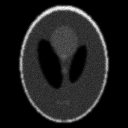
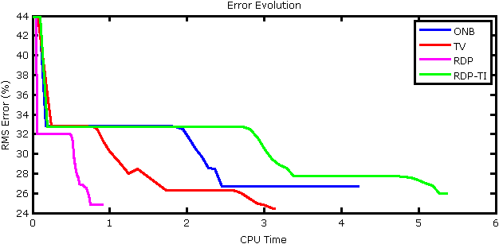

This Is SPIRAL-TAP
Overview
The Sparse Poisson Intensity Reconstruction ALgorithms (SPIRAL) toolbox, SPIRALTAP, is MATLAB code for recovering sparse signals from Poisson observations. SPIRAL minimizes a regularized negative log-likelihood objective function with various penalty choices for the regularization terms:
- Sparsity ($\ell_1$ norm) of the coefficients in an orthonormal basis, denoted SPIRAL-ONB,
- Total Variation seminorm (TV) of the image, denoted SPIRAL-TV,
- Penalty based on Recursive Dyadic Partitions (RDPs) denoted SPIRAL-RDP, and
- Penalty based on translationally-invariant (cycle-spun) RDPs, denoted SPIRAL-RDP-TI.
For more details, see our paper (available on IEEE Xplore and arXiv):
Z. T. Harmany, R. F. Marcia, and R. M. Willett, “This is SPIRAL-TAP: Sparse Poisson Intensity Reconstruction ALgorithms – Theory and Practice,” IEEE Transactions on Image Processing, vol. 21, pp. 1084–1096, Mar. 2012.
To aid users, we provide a few examples of our algorithm. To view a demonstration, execute in MATLAB
SPIRALdemo
switching the variable demo in SPIRALdemo.m to 1, 2, or 3 selects among three simulations. Details of each can be found below.
Note: Some of these demonstrations utilize the Rice Wavelet Toolbox (freely available online) to compute the discrete wavelet transform. We include this toolbox here (although it may need to be recompiled on your platform). We also use the FISTA algorithm (in the denoise directory) of Beck and Teboulle for constrained total variation denoising.
Demonstration 1
Description: One dimensional compressed sensing example penalizing the sparsity ($\ell_1$ norm) of the coefficients in the canonical basis. Here the true signal $f$ is of length 100,000 with 1,500 nonzero entries yielding a sparsity of 1.5%. We take 40,000 compressive measurements in $y$. The average number of photons per measurement is 15.03, with a maximum of 145. We run SPIRAL until the relative change in the iterates falls below a tolerance of 1e-8, up to a maximum of 100 iterations (however only 37 iterations are required to satisfy the stopping criterion).
Output: This demonstration automatically displays Figures 1 through 4.
Figure 1: Simulation setup (true signal, true detector intensity, observed counts). Note, this figure is zoomed to the first 200 samples only.
Figure 2: Reconstructed signal (red) overlaid on the true signal (blue). Note, this figure is zoomed to the first 200 samples only.
Figure 3: RMS error evolution versus computation time.

Figure 4: Objective evolution versus computation time.
Demonstration 2
Description: Here we consider an image deblurring example. The true signal is a 128 $\times$ 128 Shepp-Logan phantom image with mean intensity 1.22e5. The true detector mean intensity is 45.8, and the observed photon count mean is 45.8 with a maximum of 398. Here we consider four penalization methods:
- Sparsity ($\ell_1$ norm) of coefficients in an orthogonal (wavelet) basis,
- TV of the image,
- Penalty based on RDPs, and
- Penalty based on translationally-invariant (cycle-spun) RDPs.
We run all the SPIRAL methods for a minimum of 50 iterations until the relative change in the iterates falls below a tolerance of 1e-8, up to a maximum of 100 iterations (however, only about 70 iterations are required to satisfy the stopping criterion for all methods).
Output: This demonstration automatically displays Figures 5 though 9. Since this is an image processing example, we explicitly show the outputs.
| True Signal | True Detector Intensity | Observed Photon Counts |
|---|---|---|
|  |
Figure 5: Simulation setup.
Figure 6: The objective evolution for the methods where explicit computation of the objective is straightforward.

Figure 7: Normalized RMS error evolution versus computation time.
| SPIRAL-ONB | SPIRAL-TV |
|---|---|
| RMSE (%) = 24.83 | RMSE (%) = 25.97 |
| SPIRAL-RDP | SPIRAL-RDP-TI |
| RMSE (%) = 24.83 | RMSE (%) = 25.97 |
Figure 8: Final reconstructions.
| SPIRAL-ONB | SPIRAL-TV |
|---|---|
| RMSE (%) = 24.83 | RMSE (%) = 25.97 |
 | |
| SPIRAL-RDP | SPIRAL-RDP-TI |
| RMSE (%) = 24.83 | RMSE (%) = 25.97 |
| | |
Figure 9: Magnitude of the error between the final reconstruction and the true phantom image. Note, the color scale indicates percentage difference over all reconstructions.
Demonstration 3
Description: This demonstration is similar to Demonstration 2, but uses the 256 $\times$ 256 cameraman image instead of the Shepp-Logan phantom. The true signal has a mean intensity of 1.19e5, the true detector mean intensity is 44.4, and the observed photon count mean is 44.4 with a maximum of 111. Due to the larger problem size, we need to alter the termination criteria. We run all the SPIRAL methods for a minimum of 50 iterations until the relative change in the iterates falls below a tolerance of 1e-8, up to a maximum of 300 iterations.
Output: Like Demonstration 2, this demonstration automatically displays a similar set of images, shown in Figures 10 through 14.
| True Signal | True Detector Intensity | Observed Photon Counts |
|---|---|---|
Figure 10: Simulation setup.
Figure 11: The objective evolution for the methods where explicit computation of the objective is straightforward.
Figure 12: Normalized RMS error evolution versus computation time.
| SPIRAL-ONB | SPIRAL-TV |
|---|---|
| RMSE (%) = 24.83 | RMSE (%) = 25.97 |
| SPIRAL-RDP | SPIRAL-RDP-TI |
| RMSE (%) = 24.83 | RMSE (%) = 25.97 |
Figure 13: Final reconstructions.
| SPIRAL-ONB | SPIRAL-TV |
|---|---|
| RMSE (%) = 24.83 | RMSE (%) = 25.97 |
| SPIRAL-RDP | SPIRAL-RDP-TI |
| RMSE (%) = 24.83 | RMSE (%) = 25.97 |
Figure 14: Magnitude of the error between the final reconstruction and the true phantom image. Note, the color scale indicates percentage difference over all reconstructions.